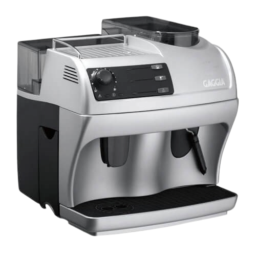

<ion-content fullscreen class="bg_content">
  <br>
  <ion-grid *ngFor="let d of data">
    <ion-row>
      <ion-col size="12" align-self-center>
        <div class="ion-text-center">
          <h1>My coffee</h1>
          <br>
        </div>
      </ion-col>
    </ion-row>
    <br>
    <ion-row>
      <ion-col>
        <ion-card>
            <ion-item>
              <br>
              <ion-grid>
                <ion-row align-items-center>
                  <ion-col size="3" offset="1">
                    <div>
                      
                    </div>

                  </ion-col>
                  <ion-col align-self-start>
                    
                    <br>
                    <div class="ion-text-center">

                      <ion-text>
                        <ion-icon src="/../assets/icon/coffee-cup.svg"></ion-icon>
                        <label> {{d.totalCup}} CUP</label>
                      </ion-text>
                      <br>
                    </div>
                  </ion-col>
                </ion-row>
              </ion-grid>
            </ion-item>
        </ion-card>

        <ion-card>
          <ion-item>
            <ion-icon src="/../assets/icon/thermometer.svg" slot="start"></ion-icon>
            <ion-label>temperature</ion-label>
            <ion-chip style="--background:#ECE0D1">
              <ion-label color="dark">{{d.tempOfWater}}</ion-label>
            </ion-chip>
          </ion-item>

          <ion-item>
            <ion-icon src="/../assets/icon/portafilter.svg" slot="start"></ion-icon>
            <ion-label>Crunching</ion-label>
            <ion-chip style="--background:#ECE0D1">
              <ion-label color="dark">{{d.crunching}}</ion-label>
            </ion-chip>
          </ion-item>

        </ion-card>
      </ion-col>
    </ion-row>


  </ion-grid>
  
</ion-content>